Практичні курси · журнал «ДентАрт» 2020 №3
Відновлення зуба з поздовжнім розколом
Restoration of a Longitudinally Fractured Tooth
Термін «поздовжній перелом зуба» запропонований у 1996 році і має два виміри. Перший вимір полягає в довжині лінії перелому, включаючи частково оклюзійно-цервікальний напрямок, подібно до лінії на карті. Другий параметр полягає в тривалості часу, протягом якого виник цей перелом. Тому термін «поздовжній перелом зуба» стосується переломів, які характеризуються двома компонентами одночасно: протяжністю і часом виникнення.
Поздовжній розкол моляра належить до синдрому тріснутого зуба, будучи його крайнім ступенем, і зустрічається в нижніх молярах удвічі частіше, ніж у верхніх (48% і 28% відповідно). Причому менше 10% повних переломів горбиків молярів зустрічаються в зубах без будь-яких реставрацій, і тому при діагностиці таких переломів виникають значні труднощі. У порівнянні з інтактними зубами синдром тріснутого зуба зустрічається в 4 рази частіше в зубах, реставрованих композитом, і в 7,7 раза частіше в зубах, реставрованих амальгамою, при розмірі реставрацій від невеликих до середніх.
Тріщини і переломи можна класифікувати як: лінійні тріщини, переломи горбиків, тріщини на зубах, розколоті зуби і вертикальні переломи кореня. Усі ці ушкодження зубів є результатом функціонального навантаження (хронічної травми), що призводить природні деформації зубних тканин і зубів під циклічними оклюзійними навантаженнями до патологічного стану. Тому для пояснення механізму утворення поздовжнього розколу зуба слід узяти за основу той факт, що зуби, щелепи, кістки черепа циклічно деформуються під впливом оклюзійного стресу.
Природні деформації жувальних зубів
Зуби піддаються оклюзійним навантаженням циклічно під час функції жування і функції скидання напруги з мозку через стискання зубів. У кожному зубі оклюзійні навантаження розподіляються по контрфорсах і пошарово поглинаються через деформації зубних тканин. Деформації зубних тканин призводять до нерівномірних деформацій зубів, внаслідок чого в зубі виникають ділянки стискання і розтягування, які компенсуються механічними властивостями зубних тканин.
Якщо людина стискає зуби, коронки жувальних зубів скорочуються по висоті і розширюються (контакти між зубами стають щільнішими, і це можна легко перевірити), горбики розходяться в боки (відбувається дилятація горбиків) і між горбиками по центру зуба виникає розтягнення зубних тканин (рис. 1). Якщо людина розтискує зуби, коронки жувальних зубів повертаються у початковий стан, випрямляються, стають вищими, контакти між зубами в зубному ряду послаблюються, горбики сходяться і розтягнення зубних тканин між горбиками зникає (рис. 2). І так 400.000 разів протягом 3-х років — таке співвідношення циклічності прийняте при визначенні стійкості до стирання композитів для бічних зубів за методом трьох тіл.
Через розуміння природних деформацій жувальних зубів внаслідок циклічних оклюзійних навантажень можна пояснити всі особливості реставраційної системи Блека (дизайн порожнин різних класів, вкладки/накладки, коронки, штифтові зуби) і особливості сучасних адгезивних реставрацій, необхідність ферула, і чому реставраційні матеріали, які деформуються так само, називають біоміметичними.
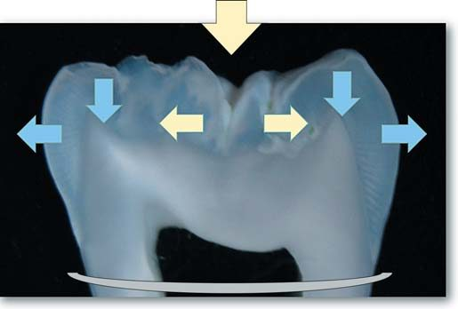
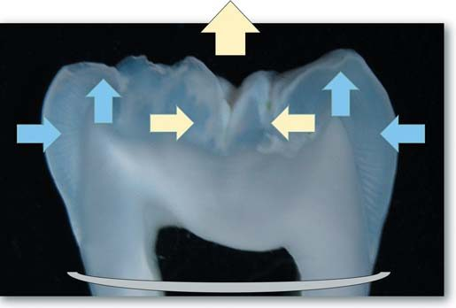
Клінічний приклад склеювання моляра з поздовжнім розколом
Іногородній пацієнт, вік 31 рік, звернувся у клініку в листопаді 2005 року з метою реставрації верхніх передніх зубів. На підставі первинної діагностики з метою відновлення початкової анатомічної форми зубів і прикусу було ухвалене спільне рішення про системне відновлення всіх зубів у прямій техніці реставрації композитом з ендопереліковуванням ряду зубів з подальшим протезуванням відсутнього зуба 37 з опорою на імплантат.
Реставрація всіх верхніх зубів зроблена в грудні 2005 року за два відвідування по два дні, включаючи ендодонтичне переліковування девітальних зубів 21 і 27. Реставрацію всіх нижніх зубів зробили у березні 2006 року за три відвідування по одному дню, включаючи ендодонтичне переліковування зубів 46 і 47. Усю клінічну історію цього пацієнта — клінічну ситуацію (стан усіх зубів і прикусу до системної реставрації), стан після системної реставрації, через 10 років, реновацію всіх зубів і прикусу (закінчення терміну служби композитних реставрацій), пряме відновлення композитом коронки зуба 37 на абатменті (на завершення реновації), а також стан усіх зубів і прикусу через 3 роки після реновації (завершення гарантійного періоду) можна подивитися у двох попередніх статтях, присвячених системній реновації зубів і прикусу.
Важлива заувага: імплантація і протезування відсутнього зуба 37 робилися за місцем проживання у 2009 році... Це означає, що два правобічні девітальні моляри перебували в умовах функціонального перевантаження протягом 3-х років, і можливо, це стало ключовим фактором трагічної долі зуба 46, який розколовся через 5 років після ендодонтичного переліковування і відновлення композитами початкової анатомічної форми.

![Початковий стан зуба 46. Реставрована частина девітальних зубів 46 і 47 потребує заміни через відновлення початкової анатомічної форми в системному відновленні прикусу. На відміну від точкового контакту між зубами 46 і 45, між двома молярами визначається плоский контакт і набряклість міжзубного сосочка внаслідок порушення крайового прилягання реставрації. Коронка зуба 45 з незначним стиранням опорного горбика може бути провідним орієнтиром для визначення висоти зубів усього нижнього правого секстанта.](images/rosk-004.jpg)
![Первинна рентгенограма зуба 46. На рентгенограмі спостерігається дискретне ниткоподібне заповнення кореневих каналів, обтураційний матеріал в апікальній частині обох коренів відсутній як результат пломбування каналів методом однієї пасти, проте активної захисної реакції немає. Періодонтальна щілина злегка розширена в коронковій частині дистального кореня і біфуркації коренів, що може бути результатом наявності крайової щілини між композитом і коренем. Позиція анкерного штифта в зубі 47, вважаю, коментарів не потребує!](images/rosk-005.jpg)
Ендодонтичне переліковування і реставрація
![Ендодонтичне переліковування зуба 46. Після ізоляції створено доступ до усть кореневих каналів, канали розпломбовані і сформовані файлами ProFile (Dentsply Sirona) під контролем робочої довжини за допомогою апекслокатора і рентгенологічного підтвердження, іригація розчинами гіпохлориту натрію і ЕДТА з ендоактивацією, система кореневих каналів обтурована гутаперчею Thermafil із силером AH Plus (Dentsply Sirona). Пластикові носії були зрізані борами ThermaCut, а порожнину очищено від гутаперчі ультразвуковим скейлером.](images/rosk-007.jpg)

![Заповнення усть кореневих каналів. Пластикові носії і гутаперча були ізольовані текучим композитом X-Flow (Dentsply Sirona) з полімеризацією 20 с, а устя заповнені яскравим відтінком WO наногібридного композиту Esthet-X Improved. При реставрації ендодонтично лікованих зубів важливо створити умови для можливого переліковування, тому заповнення усть каналів білим відтінком дозволить легше позиціонувати устя кореневих каналів і зменшить потенційні втрати природних зубних тканин при повторному препаруванні.](images/rosk-009.jpg)


![Відновлення шару основної емалі. Згідно з біоміметичною концепцією, емаль відновлюється двома відтінками: відтінком тіла, що імітує основну емаль, і прозорим відтінком, що імітує поверхневу емаль. Співвідношенням двох відтінків у межах товщини емалі формується кінцевий колір реставрації: чим більша товщина відтінку тіла, тим більше колір реставрації наближається до кольору еталонів груп А і В системи VITA, чим більша товщина прозорого відтінку, тим більше колір реставрації наближається до кольору еталонів групи С.](images/rosk-013.jpg)
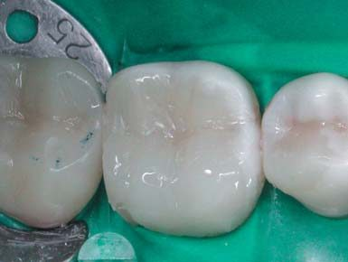
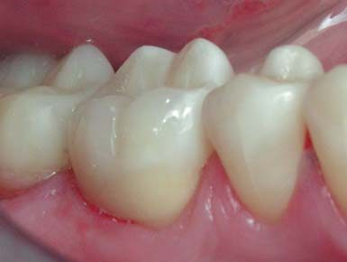

Поява і розвиток поздовжньої тріщини
Після системного відновлення прикусу клінічна ситуація була контрольованою, скарг жодних, прикус і оклюзія працюють. Однак ретроспективно на знімках жувальної поверхні цих нижніх молярів можна побачити тріщину, яка спочатку розділила дистальний крайовий валик і частину поздовжньої фісури, принаймні до центру жувальній поверхні, потім пройшла вже через центр коронки, і почалося розділення мезіальних горбиків... Обидва нижні моляри девітальні, тому оклюзійний тиск на цих зубах не контрольований через відсутність зворотного зв'язку про ступінь деформації зубних тканин через структури пульпи зуба.
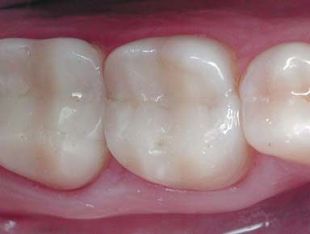
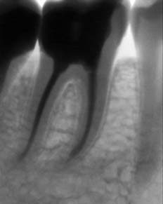
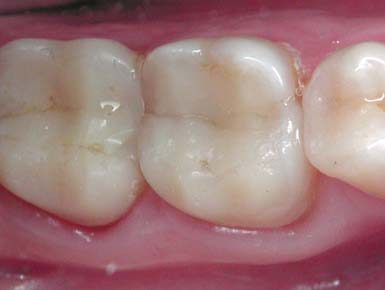
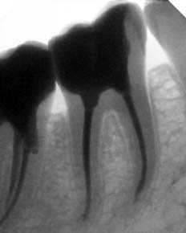
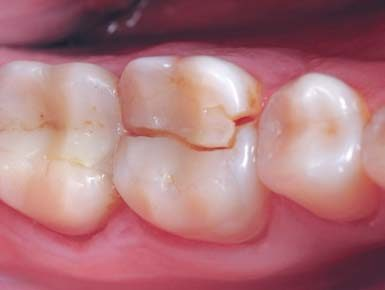
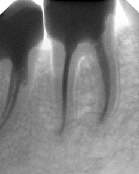
Через 5 років пацієнт звернувся зі скаргами на перелом бокового зуба на нижній щелепі праворуч. При огляді виявлено поздовжній розкол зуба 46 з рухомим оральним фрагментом; маніпуляції з фрагментом, перкусія були безболісні, але ясенний край кровоточив при русі фрагмента коронки. Крім цього, відшарування композиту з обламуванням його країв виявляється і на мезіальному вестибулярному опорному горбику зуба 47.
Діагноз: поздовжній розкол зуба 46. Ретроспективно було виявлено, що поздовжня тріщина формувалася протягом тривалого часу, і перші ознаки виявлялися вже через півтора року після реставрації, але не були помічені. Можливі варіанти втручання: видалення зуба 46 з подальшою імплантацією (у пацієнта вже був заміщений імплантатом штучний зуб 37, і можливо, саме через це правий бік нижнього зубного ряду був перевантажений), видалення рухомого орального фрагмента коронки з подальшим відновленням від рівня лінії розколу, склеювання коронки зуба 46. З огляду на раннє звернення і походження розколу в результаті циклічного жувального навантаження, було обрано третій варіант втручання — склеювання коронки розколотого зуба 46.
Ключові дії при переломах: репозиція та іммобілізація!
Біомеханіка тіла людини і зубощелепної системи починається з біомеханіки окремих зубних тканин! Міцність природних зубних тканин цілком достатня, щоб протистояти нормальним циклічним навантаженням. Однак якщо стискання зубів відбувається дуже часто або дуже сильно, як буває при бруксизмі, з часом у ділянках напруження на розрив настає втома зубних тканин / реставраційних матеріалів, і в результаті циклічної втоми формуються мікротріщини, потім тріщини, котрі в якийсь момент «зливаються» в одну лінію розколу / перелому зуба (рис. 3).
У зубах з вітальною пульпою існує система зворотного зв'язку, коли надмірні зусилля стискання зуба призводять до надмірної деформації зубних тканин. Надмірна деформація зубних тканин викликає у людини дискомфорт або біль, і вона рефлекторно припиняє стискання зубів. У девітальних зубах такого зворотного зв'язку немає, і людина не відчуває сили стискання зубів, яка може значно перевершувати нормальні оклюзійні навантаження. Інакше кажучи, девітальні зуби просто не мають «гальм»...
Три силові пояси, що обмежують циклічні деформації. За нашими уявленнями, у кожному зубі існують три силові пояси, які, немов обручі на бочці, обмежують циклічні деформації зубних тканин внаслідок оклюзійних навантажень (рис. 4). Перший пояс у жувальному зубі — це два/чотири горбики, з'єднані в кільце крайовими валиками/гребенями. Порушення першого силового пояса внаслідок патології і подальшої реставрації веде до збільшення природної дилятації горбиків: реставрація Класу II збільшує дилятацію горбиків на третину, реставрація MOD — у півтора раза. Другий пояс — екватор коронки, де товщина зубних тканин найбільша, — доповнений зсередини арковою конструкцією даху порожнини зуба. У девітальному зубі дах порожнини зуба зазвичай зруйнований для створення доступу до усть кореневих каналів, що ослаблює другий силовий пояс. Третій силовий пояс — це кільце кортикальної кісткової тканини навколо кореня зуба.
Деформації зубних тканин під циклічними навантаженнями і створювані ними напруження концентруються в зубі перед кожним силовим поясом, саме на цих рівнях накопичується механічна втома... У девітальному зубі з великим доступом до порожнини зуба та реставрацією Класу II/MOD перший і другий силові пояси ослаблені, тому циклічні напруження концентруються в зоні шийки зуба перед третім силовим поясом. Коли накопичення механічної втоми зубних тканин протягом тривалого періоду досягає критичного рівня, відбувається утворення мікротріщин, тріщин, і все завершується поздовжнім переломом, який, як правило, локалізується вище кісткового краю. Фрагменти розколотого зуба утримуються круговою зв'язкою, і якщо перелом стався щойно, їх можна зіставити (репозиція), зафіксувати (іммобілізація) і з'єднати (реставрація), компенсувавши втрачену міцність перших двох силових поясів скловолоконним армуванням.
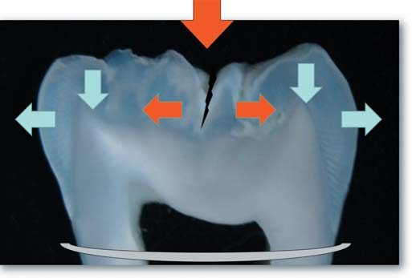
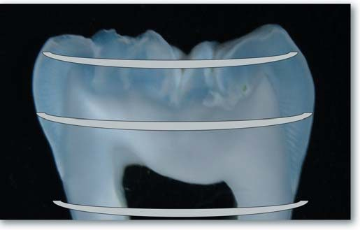
Склеювання розколотого зуба
![Оцінка поздовжнього розколу зуба. Спочатку були видалені окремі фрагменти композиту в зоні поздовжнього розколу зуба 46, які були відокремлені шляхом діагностичного препарування. Поздовжній розкол утворили кілька ліній, включаючи фрагмент проксимальної дистальної поверхні. Основна лінія розколу пройшла ближче до оральної поверхні моляра, і це побічно свідчило про те, що оральний фрагмент, можливо, відокремився вище рівня кісткового краю, що оточує зуб, і фіксується за рахунок ясенного прикріплення.](images/rosk-025.jpg)
![Репозиція розколотого зуба 46. Після видалення всіх рухомих фрагментів і промивання по лінії поздовжнього розколу зроблено пробну репозицію рухомої оральної частини і нерухомої основної частини розколотого зуба. Потім була ізольована права частина нижнього зубного ряду, включаючи два центральні різці, і після промивання лінії поздовжнього розколу зроблено основну репозицію фрагментів під візуальним контролем з оптичним збільшенням кратністю 4,3. Після зіставлення фрагментів зуба кровоточивість відсутня.](images/rosk-026.jpg)
![Іммобілізація розколотого зуба 46. Після репозиції фрагментів розколотого моляра слід провести іммобілізацію, як велить універсальний протокол лікування будь-якого перелому. Для іммобілізації було підібрано кламп системи рабердаму, лещата якого рівномірно охоплювали шийку зуба, зберігаючи позицію фрагментів, і рухливість орального фрагмента була відсутня повністю. Кламп NW із системи ізоляції Ash (Dentsply Sirona) має необхідну потужність стабільного утримання фрагментів розколотого моляра в репозиції.](images/rosk-027.jpg)
![Препарування лінії розколу. В умовах стабільної іммобілізації фрагментів розколотого моляра продовжено препарування лінії перелому алмазним препарувальним бором для виявлення топографії проходження лінії перелому та ультразвуковим скейлером для її очищення. У результаті препарування була підтверджена локалізація лінії розколу вздовж оральної стінки, вона не зачіпає устя кореневих каналів і дно порожнини зуба, і це сприятливі умови для склеювання фрагментів та відновлення цілісності розколотого зуба.](images/rosk-028.jpg)


![Усунення дефекту дистальної стінки. Після заповнення порожнини і лінії поздовжнього розколу мікрогібридним композитом, армованим скловолоконною стрічкою Dentapreg, за допомогою матричної системи Palodent усунуто дефект проксимальної дистальної стінки трьома композитами (текучий, мікрогібридний і наногібридний) з одномоментною полімеризацією. Після пробного препарування лінії відшарування композиту на мезіальному вестибулярному горбику другого моляра було вирішено замінити оклюзійну поверхню цього зуба повністю.](images/rosk-031.jpg)


![Вид склеєних молярів 46/47. Інтеграція в оклюзії склеєних молярів і фінішна обробка передбачали уточнення анатомічної форми коронок зубів фінішними борами (Shofu), шліфування поверхні силіконовими головками Enhance (Dentsply Sirona) і полірування щітками Occlubrush (KerrHawe). Після інтеграції в оклюзії вестибулярні опорні горбики вийшли згладженими, бо після системного відновлення минуло 5 років і міжальвеолярна висота зменшилася. Висота оральних напрямних горбиків залишилася на колишньому рівні.](images/rosk-034.jpg)
Контроль у динаміці
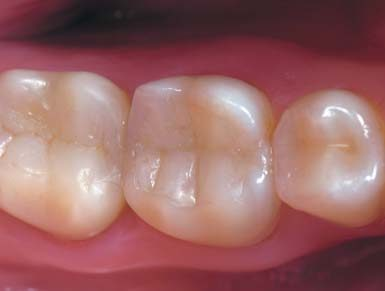
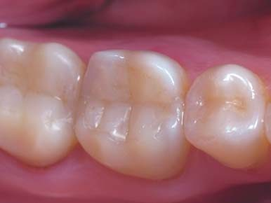
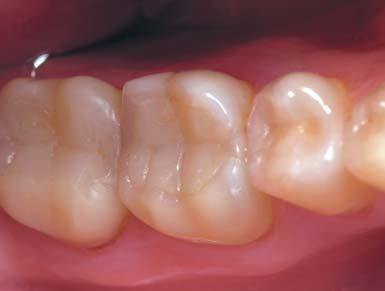
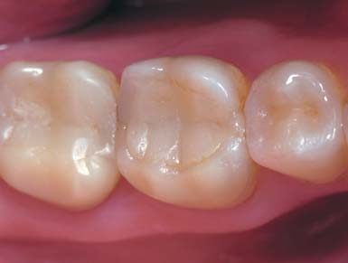
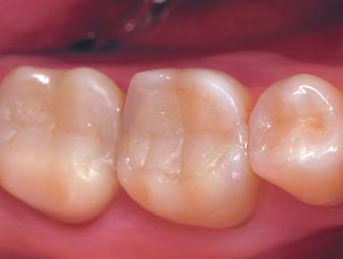
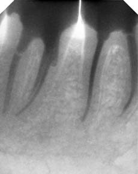
Приблизно лише третину зубів із тріщинами рекомендовано для відновлення. Наявність карієсу, біль при накушуванні і ознаки тріщини, які виявляються на рентгенівському знімку, є достатніми протипоказаннями для реставрації розколотих зубів, хоча ознаки тріщини на рентгенограмі становлять лише 3% абсолютної різниці (4% рекомендованого лікування проти 1% рекомендованого моніторингу).
У рамках системного відновлення всіх зубів у цьому випадку вибір зроблено на користь реставрації, і тепер проведення регулярних оглядів набуває особливої важливості, оскільки процес інтеграції відновленого прикусу впливає на багато систем організму: скронево-нижньощелепні суглоби, м'язовий баланс, постуру... Щорічно під час такого огляду робиться фотореєстрація стану зубів і прикусу для оцінки виконання пацієнтами правил користування реставрованими зубами і виявлення дефектів, що з'явилися, особливо протягом трирічного гарантійного періоду. Нічна і денна ізолюючі капи для захисту реставрованих зубів від стресогенного стискання обов'язкові, і якщо судити про зношування вестибулярних опорних горбиків, обидві капи пацієнта зберігаються у чудовому стані.
Розшарування композиту по вестибулярних горбиках може бути пов'язане з проблемним з'єднанням між двома різними порціями композиту (нова і 5-річна), гіршою склеюваністю нанокомпозиту в порівнянні з мікрогібридами, виявленим недостатнім притиранням нової порції композиту і з функціональним навантаженням опорних горбиків. Нарешті, через 5 років після склеювання розколотого зуба завершився термін 10-річної служби реставрацій на всіх інших зубах, і попереду ревізія реставрованих зубів (оцінка стирання композиту та виявлення дебондингу) з подальшою системною реновацією. Але головне, рецидив поздовжньої тріщини зуба 46 відсутній!
Реновація реставрованих зубів через 10 років
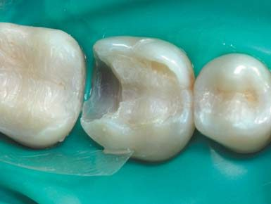
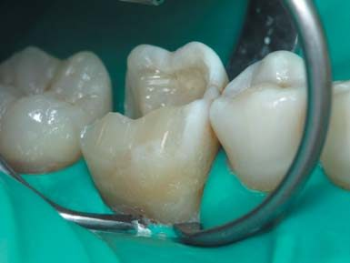
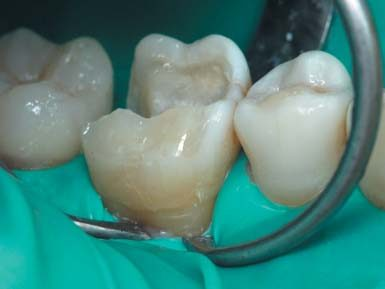
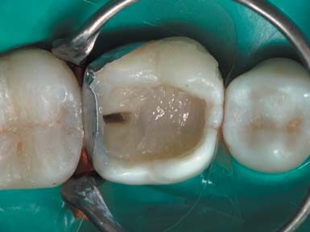
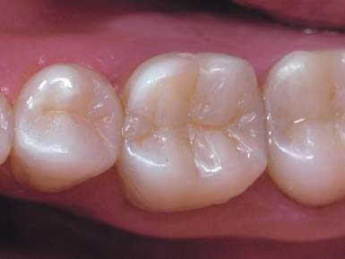
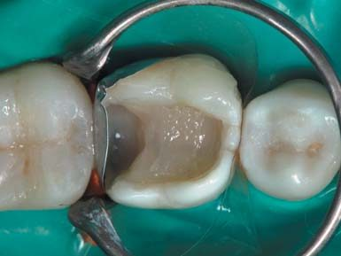
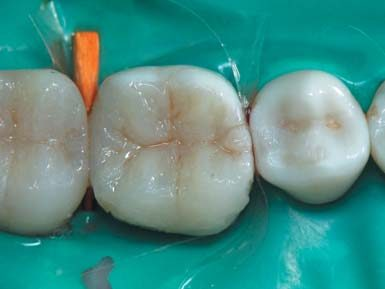
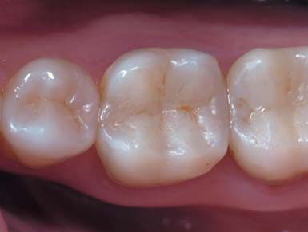
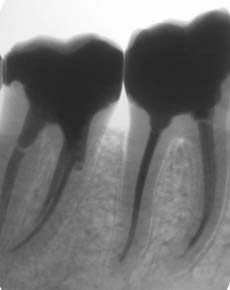
Стан прикусу через 13 років
![Стан прикусу через 13 років. Через 10 років після первинного системного відновлення було зроблено реновацію реставрованих зубів із заміною стертої частини реставрацій і заміною частини реставрацій з виявленим дебондингом. Ясна і сосочки мають здоровий вигляд, хоча за ці роки в порівнянні зі знімком на початку статті видно вікову рецесію ясенного краю. Фото зроблене через 3 роки після реновації в рамках фотореєстрації, що завершує гарантійний період. Усе добре, і прикус функціонує (батут працює!..).](images/rosk-051.jpg)
Висновки
Діагноз розколу бокового зуба у більшості випадків є абсолютним показанням для видалення, але стоматолог може піти на великі і тривалі адгезивні процедури, якщо прагне зберегти його. Реабілітаційне склеювання розколотого зуба може бути успішним, як демонструє аналізований клінічний випадок, хоча 98% американських ендодонтистів у випадку поздовжнього розколу зуба обирають видалення (результати опитування).
Цілком реально, що в разі склеювання розколотого зуба стоматолога і пацієнта може спіткати невдача... Але лікар повинен мати право на помилку (за згодою пацієнта), інакше у випадках клінічної дилеми у лікаря завжди буде лише песимістичний вибір, як у американських ендодонтистів. Якщо не спробувати зберегти зуб з поздовжнім розколом і стоматолог просто «вмиє руки», направивши пацієнта на видалення зуба, для пацієнта це буде гарантовано невдача!
Реставрований зуб з поздовжнім переломом вимагає регулярного динамічного спостереження, і технологія прямої реставрації зубів композитом дозволяє в разі потреби зробити ремонт, ребондинг без заміни всієї реставрації. Під спостереженням автора є розколотий верхній центральний різець, після склеювання якого минуло рівно 25 років, і він усе так само функціонує! Хоча, звичайно, були й невдачі, пов'язані з пізнім зверненням за допомогою...
Автор висловлює подяку лікареві Максимові Скрипнику за допомогу в підготовці статті.
Література
- Радлинский С. Реставрационные конструкции переднего и бокового зубов // ДентАрт. — 1996. — №4. — С. 22-29.
- Радлинский С. Реставрация боковых зубов: стратегия и принципы // ДентАрт. — 1999. — №4. — С. 19-29.
- Радлинский С. Биомеханика зубов и реставраций // ДентАрт. — 2006. — №2. — С. 42-48.
- Радлинский С. Системное восстановление высоты всех зубов при повышенной стираемости // ДентАрт. — 2007. — №3. — С. 38-48.
- Радлинский С. Реставрация контактных поверхностей в боковых зубах // ДентАрт. — 2015. — №2. — С. 22-40.
- Радлинский С. Системная реновация реставрированных зубов. Верхние зубы // ДентАрт. — 2019. — №2. — С. 15-28.
- Радлинский С. Системная реновация реставрированных зубов. Нижние зубы // ДентАрт. — 2019. — №3. — С. 25-34.
- Abulhamael A. M. at all. Treatment Decision-making of Cracked Teeth: Survey of American Endodontists // J Contemp Dent Pract. — 2019. — 20(5). — P. 543-547.
- Abraham S., Neelathil Chacko L. Split posterior tooth: conservative clinical re-attachment // BMJ Case Rep. — 2014. — July 30.
- Hilton T. J., Ferracane J. L., Broome J. C. Summitt's Fundamentals of Operative Dentistry. — Chicago: Quintessence Publ Co, 2013. — P. 50-51.
- Hilton T. J. at all. Recommended treatment of cracked teeth: Results from the National Dental Practice-Based Research Network // J Prosthet Dent. — 2020. — 123(1). — P. 71-78.
- Leinfelder K. F., Suzuki S. In-vitro Wear Device for Determining Posterior Composite Wear // JADA. — 1999. — 130: 1347-1353.
- O'Brien W. J. Dental Materials and Their Selection. — Chicago: Quintessence Publ Co, 2008. — 425 p.
- Paul R. A., Tamse A., Rosenberg E. Cracked and broken teeth: definitions, differential diagnosis and treatment // Refuat Hapeh Vehashinayim. — 1993. — 24(2). — P. 7-12.
- Rivera E. M., Williamson A. Diagnosis and treatment planning: cracked tooth // Tex Dent J. — 2003. — 120(3). — P. 278-283.